Map
An Overview of Different Drawing Locations
Locations
| Legend | |
|---|---|
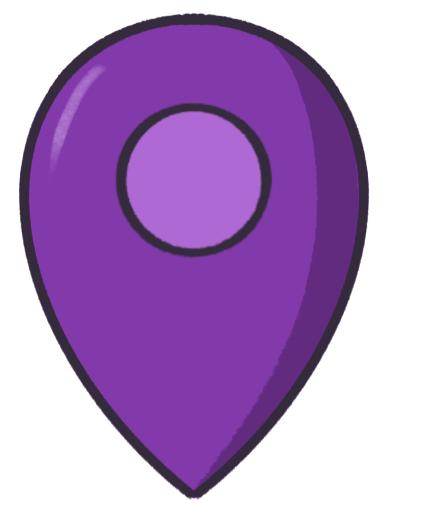 |
Deliberate |
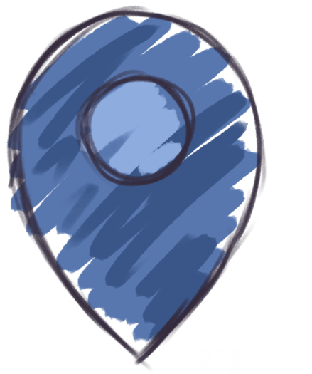 |
Exploratory |
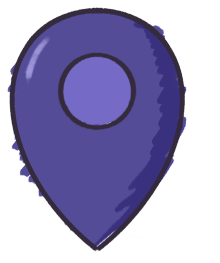 |
Both |
(Click each region name to show the markers for that region, or click each individual location name to fly to that location.)
This page contains information about different locations I have drawn at and how I feel about each experience now (where my ratings are based entirely on such feelings rather than concrete standards), explained in more detail in chronological order below.
Each location is marked as either "deliberate", "exploratory", or "both", where "deliberate" means structured drawing and completed pieces, "exploratory" means experimenting and looser sketches, and "both" is...both.
This is somewhat of a prelude to my current state with drawing since it discusses my different sources of inspirations over time.
Fuzhou, China
Childhood Apartment
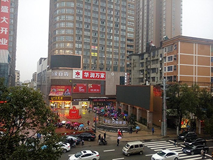
I was born in the U.S., but I am a “satellite baby”, so I spent the first few years of my life in Fuzhou, China. As a result, this became the place where I first picked up a pencil and started drawing, around two or three years old. My memories of the apartment my grandparents lived in are a bit blurry, but I do recall the period as quite carefree for my artistic expression. This was when I had the least amount of mental constraints and self-criticism when it came to drawing.
Brooklyn, New York
Old NY House
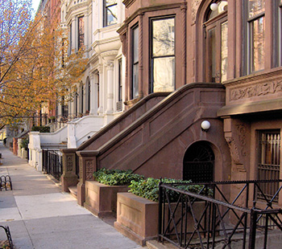
After leaving China, my brother and I were moved permanently to Brooklyn, New York. This isn’t the first house we moved to in New York, but it is the most memorable because I stayed here the longest. At this time, I was still relatively new to drawing, but I was old enough to start experimenting with coloring supplies, which was quite novel back then.
P.S. 105
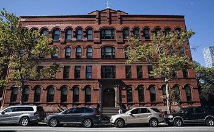
My experience at this school is similar to my drawing experience at the “Old House”, since this is the elementary school I attended while living in New York. The difference is that rather than having core memories of drawing here, I vividly remember climbing up a thousand flights of stairs every morning instead. When I did draw at school, they were all for my assignments, and I disliked being told what to draw, even back then.
Hamilton, New Jersey
Current House
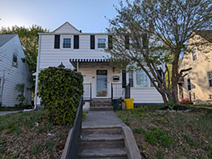
I spent a lot of time drawing at my current house during COVID, and it was where I started working on my first commissions. I did work on some art assignments at the house as well, but my drawing experience here is a little worse, simply because being able to work on what I want to at times means more frustration when I can’t quite get my ideas down properly.
China Wok
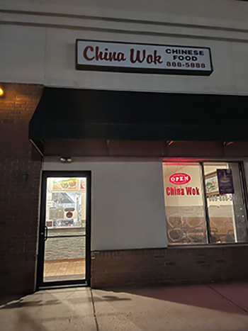
My parents purchased a restaurant in New Jersey, which is the reason for our move. This place was quite literally the first place I stepped into when I got out of the car in New Jersey for the first time. I was excited at first that my parents bought a restaurant, but little did I know I would end up at the restaurant more than at our apartment (our first residence in New Jersey) and later at our house. As a result, I did everything here: interacting with customers, eating, doing my homework, and of course, drawing. Chatter, the sizzling of food, and the ringing of the phone were the background noise here, and I dislike loud, continuous noise.
The only reason this place is receiving a higher rating is that a customer bought me my first drawing tablet, and that marked the beginning of my digital art era, which is quite important to me. Though many customers also complimented my drawings, this was the beginning of my downward spiral, though not nearly as severe yet.
Hamilton High West
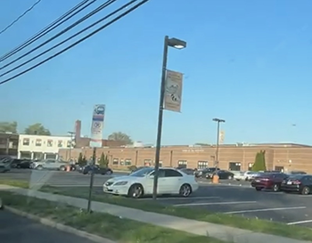
There isn’t much to say about my artwork in high school. Nearly all the ones I completed here were a part of my art class assignments. Though I mentioned that I don’t like being told what to draw, I ended up creating some pieces in media I wasn’t used to, which I was quite proud of. There were also a few assignments here and there that required a more realistic art style, which indirectly benefited my art overall.
New Brunswick, New Jersey
Quad Three Residence Hall
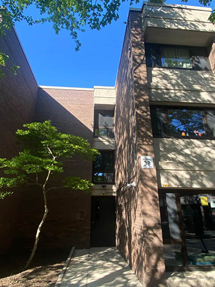
At this time, when I started college, I didn’t really draw anymore. I did decide to try to get back into drawing a few months into my first semester, which was somewhat effective for a while.
But unlike all the other locations, my drawing experience was heavily influenced by external factors. The Quads felt like an oven in the summer, and the bathroom on my floor had a gnat infestation. Not to mention, my neighbors were loud, my first roommate was too messy, and someone once threw up on my foot. Even if none of these things had anything to do with drawing, the environment certainly didn’t inspire me to continue to do so.
Off-Campus House
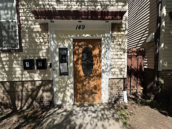
Naturally, after my terrible experience with Rutgers dorms my freshman year, I decided to move off-campus, since it is cheaper, and I reasoned that I could have more privacy. With the external problems mostly resolved, I am back to being overly self-critical. I tried to draw again, and any real motivation was short-lived. I did complete some illustrations, but they're all for school assignments.